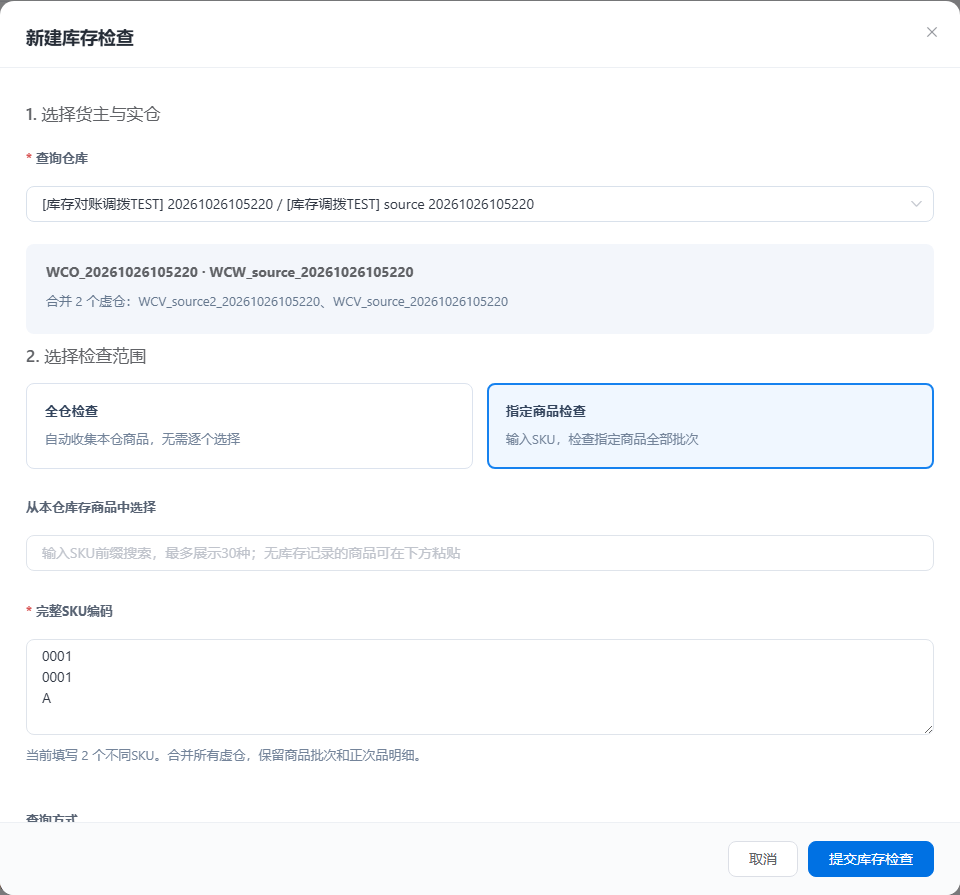
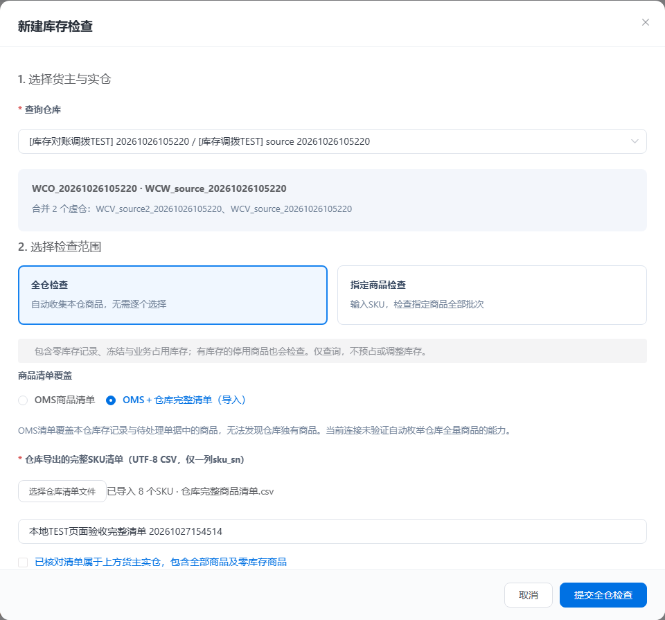
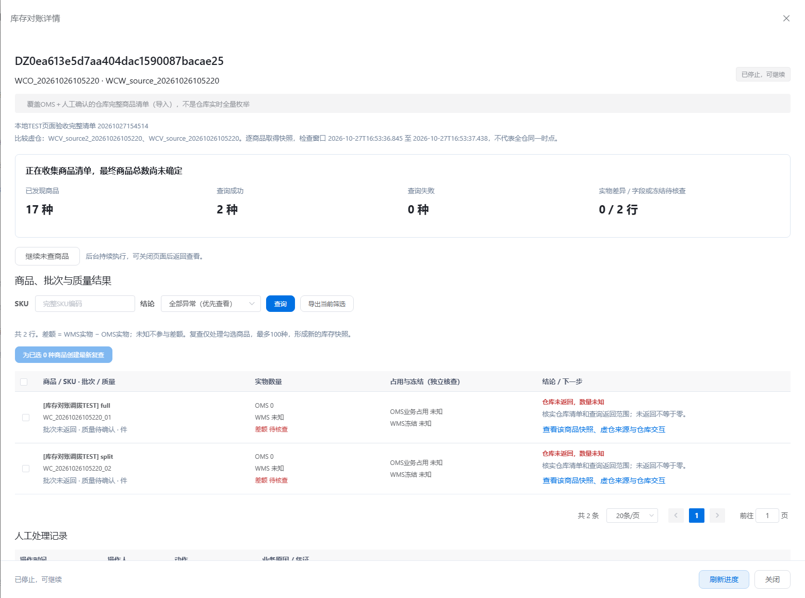
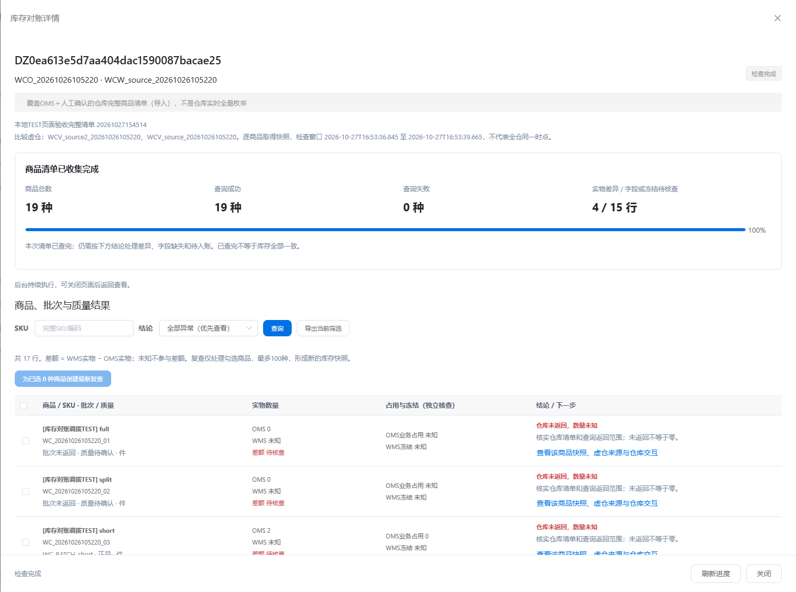
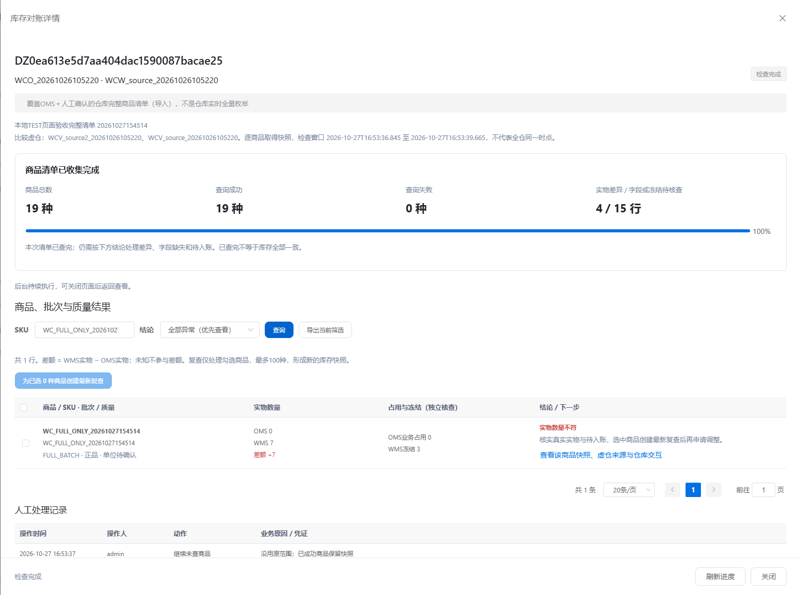
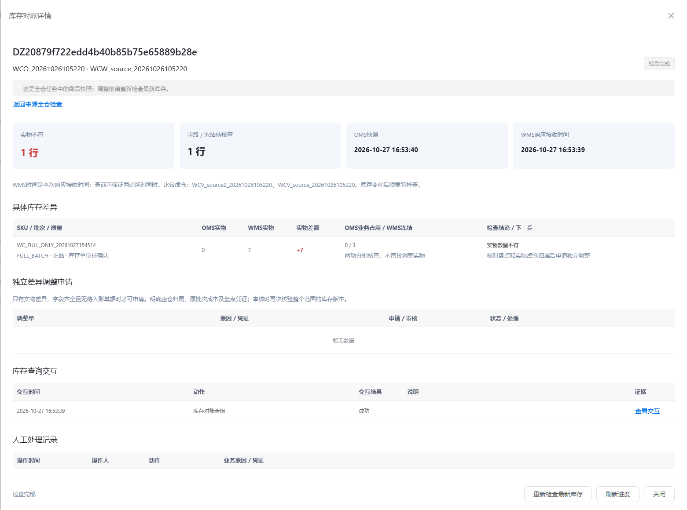

全仓库存检查验收报告
2026-10-27 16:53:50 · 本地 TEST 环境 · 单据、查询交互与测试数据保留
“检查完成”指当前清单查询结束。本测试仓仍有实物差异、缺失返回或待核查事项；本报告不宣称全仓库存一致。检查与重试没有修改OMS库存，也没有创建实物调整入账。
已交付行为与覆盖边界
全仓检查自动收集所选货主实仓下全部虚仓的库存记录与待处理单据商品；库存记录为零、冻结、已占用或商品停用均不按可售状态排除。加工组件与供应商拒收收回等待处理商品纳入清单。
默认标注“OMS清单覆盖”，不能据此排除仓库独有商品。可导入人工确认完整的仓库SKU清单进行补查，记录来源；当前未声称已接入仓库实时全量枚举。
后台逐商品取得完整批次。失败、缺失字段和缺失SKU保持未知；部分失败不标为整仓完成。停止等待当前商品结束，继续保留成功快照；失败重试只重新查询失败商品。全仓结果须先创建选中商品的最新复查，再沿用原独立调整审核及库存版本校验。
保留任务
| 场景 | 任务单号 | ID | 当前状态 | 商品数 | 实物差异行 | 字段/冻结待核查行 |
|---|
| OMS清单全仓检查 | DZ8363c9444cbd49db97e128b7ff8c327b | 10 | COMPLETED | 17 | 3 | 14 |
| 导入仓库完整清单并重试失败 | DZb3e88a1dc57248cd81ccbbb96a66f7de | 34 | COMPLETED | 19 | 4 | 15 |
| 页面提交、停止后继续 | DZ0ea613e5d7aa404dac1590087bacae25 | 196 | COMPLETED | 19 | 4 | 15 |
| 选中商品最新复查 | DZ4f4a6bcb166e408da43004cc267f3844 | 66 | COMPLETED | 1 | 0 | 0 |
详细接口场景与实际结果
01 通过按原验收实仓全盘检查；无需传SKU，自动合并两个虚仓，保留零库存与占用记录。
查看本次实际结果与数量证据
{
"task": 10,
"sku_count": 17,
"result_rows": 19,
"covers_all_oms_stock_skus": true,
"coverage": "OMS清单，不声称发现仓库独有商品"
}仓库未返回部分商品的库存。
查看本次实际结果与数量证据
{
"unknown_rows": 13,
"wms_quantity": null,
"difference": null,
"conclusion": "未知，不推断为零或缺货"
}核对保留的frozen商品最新仓库事实；旧验收后已恢复为冻结0，不能沿用旧截图当成本次预期。
查看本次实际结果与数量证据
{
"row": {
"key": "WC_20261026105220_12\u001fWC_BATCH_frozen\u001fZP",
"sku_sn": "WC_20261026105220_12",
"batch_code": "WC_BATCH_frozen",
"inventory_type": "ZP",
"oms_physical": 10,
"oms_held": 0,
"wms_physical": 10,
"wms_frozen": 0,
"status": "MATCHED",
"sources": [
{
"store_code": "WCV_source_20261026105220",
"batch_id": 451,
"unit_cost": 2.5,
"physical": 10,
"free": 10
}
],
"wms_unfrozen": 10,
"difference": 0,
"frozen_difference": 0,
"stock_unit": "件",
"goods_name": "[库存对账调拨TEST] frozen",
"child_id": 22,
"pending_documents": [],
"result_id": 14
},
"conclusion": "本次实物10、冻结0，正确为一致；冻结与业务占用分列，差异保护另由后端回归覆盖"
}分页查看全仓结果并按异常类型定位。
查看本次实际结果与数量证据
{
"page_size": 2,
"total": 19,
"distinct_pages": true
}仓库新增一个OMS无记录的商品实物7件，另一个商品回传非法负数。导入本仓完整SKU清单后检查。
查看本次实际结果与数量证据
{
"task": 34,
"coverage": "OMS_WMS_LIST",
"failed": {
"rows": [
{
"sku_sn": "WC_FULL_BAD_20261027154514",
"status": "QUERY_FAILED",
"wms_physical": null,
"difference": null,
"sources": [],
"error": "仓库数量须为有效整数，缺失不能按零处理",
"child_id": 64,
"pending_documents": [],
"result_id": 39
}
],
"total": 1
},
"conclusion": "发现仓库独有商品；单商品查询失败使整仓显示部分失败"
}修正失败商品仓库回传后，只重试失败商品。
查看本次实际结果与数量证据
{
"task": 34,
"successful_rows_unchanged": true,
"remaining_failed": 0,
"warehouse_only_row": {
"key": "WC_FULL_ONLY_20261027154514\u001fFULL_BATCH\u001fZP",
"sku_sn": "WC_FULL_ONLY_20261027154514",
"batch_code": "FULL_BATCH",
"inventory_type": "ZP",
"oms_physical": 0,
"oms_held": 0,
"sources": [],
"wms_physical": 7,
"wms_frozen": 3,
"wms_unfrozen": 4,
"status": "PHYSICAL_DIFFERENCE",
"difference": 7,
"frozen_difference": 3,
"stock_unit": "",
"goods_name": null,
"catalog_missing": true,
"child_id": 65,
"pending_documents": [],
"result_id": 40
}
}从全仓异常结果选一个商品创建最新复查。
查看本次实际结果与数量证据
{
"new_task": 66,
"source_task": 34,
"scope": {
"stores": [
"WCV_source2_20261026105220",
"WCV_source_20261026105220"
],
"skus": [
"WC_20261026105220_12"
],
"batch_code": ""
},
"can_adjust": false,
"conclusion": "新独立快照；保留库存版本与原有调整审核防护"
}尝试直接用全仓结果申请实物调整。
查看本次实际结果与数量证据
{
"rejected": true,
"reason": "须先创建选定商品的最新复查"
}库存核实
检查前后逐项比较全部QM公司商品库存、仓库库存、批次数量与版本、库存流水数量/最大ID，以及受保护退款、采购退仓、队列策略、全局任务开关和原验收清单；全部相同。表内数字依次为：总库存 / 可用 / 预占 / 已分配 / 冻结。
仓库独有测试商品的WMS实物为7，其中冻结3，OMS本仓实物为0，明确显示差额+7。检查后OMS仍未为该商品自动创建库存或记账。
| 原验收SKU | 前总 | 前可用 | 前预占 | 前分配 | 前冻结 | 后总 | 后可用 | 后预占 | 后分配 | 后冻结 |
|---|
| WC_20261026105220_01 | 10 | 10 | 0 | 0 | 0 | 10 | 10 | 0 | 0 | 0 |
| WC_20261026105220_02 | 10 | 10 | 0 | 0 | 0 | 10 | 10 | 0 | 0 | 0 |
| WC_20261026105220_03 | 10 | 10 | 0 | 0 | 0 | 10 | 10 | 0 | 0 | 0 |
| WC_20261026105220_04 | 10 | 10 | 0 | 0 | 0 | 10 | 10 | 0 | 0 | 0 |
| WC_20261026105220_05 | 10 | 10 | 0 | 0 | 0 | 10 | 10 | 0 | 0 | 0 |
| WC_20261026105220_06 | 10 | 10 | 0 | 0 | 0 | 10 | 10 | 0 | 0 | 0 |
| WC_20261026105220_07 | 10 | 10 | 0 | 0 | 0 | 10 | 10 | 0 | 0 | 0 |
| WC_20261026105220_08 | 5 | 3 | 0 | 0 | 2 | 5 | 3 | 0 | 0 | 2 |
| WC_20261026105220_09 | 5 | 3 | 0 | 0 | 2 | 5 | 3 | 0 | 0 | 2 |
| WC_20261026105220_10 | 10 | 3 | 0 | 7 | 0 | 10 | 3 | 0 | 7 | 0 |
| WC_20261026105220_11 | 8 | 8 | 0 | 0 | 0 | 8 | 8 | 0 | 0 | 0 |
| WC_20261026105220_12 | 10 | 10 | 0 | 0 | 0 | 10 | 10 | 0 | 0 | 0 |
| WC_20261026105220_13 | 8 | 8 | 0 | 0 | 0 | 8 | 8 | 0 | 0 | 0 |
| WC_20261026105220_14 | 10 | 9 | 0 | 1 | 0 | 10 | 9 | 0 | 1 | 0 |
| WC_20261026105220_15 | 10 | 8 | 0 | 2 | 0 | 10 | 8 | 0 | 2 | 0 |
| WC_20261026105220_16 | 12 | 12 | 0 | 0 | 0 | 12 | 12 | 0 | 0 | 0 |
| WC_20261026105220_17 | 10 | 10 | 0 | 0 | 0 | 10 | 10 | 0 | 0 | 0 |
页面验收
✓ 默认全仓检查，隐藏强制手填SKU的步骤
✓ 选仓后显示真实货主、实仓和两个聚合虚仓
✓ 指定商品支持粘贴、去重计数并保留前导零
✓ 复用当前货主实仓的库存SKU搜索，不要求商品处于销售状态
✓ 导入仓库完整清单后显示SKU数、来源和覆盖确认；明确不是自动仓库全量枚举
✓ 页面停止等待当前商品完成，继续操作沿用原任务和已成功快照
✓ 关闭页面后后台继续；返回显示真实商品总数、成功/失败、检查窗口及覆盖来源
✓ 仓库独有商品明确显示OMS0、WMS7、差额+7；WMS冻结3独立展示
✓ 导出使用当前筛选，仅导出所选SKU，编码保留字符串格式
✓ 商品快照可追溯虚仓、仓库交互并返回全仓任务，禁止使用旧子快照直接调整
✓ 失败子任务保留原仓库查询交互，修复后只重试该商品
供应链待办同步验证：查询结果只指向主任务，不混入SKU子快照。
01-selected-scope.png

02-full-scope.png

03-stopped-task.png

04-full-task.png

05-exact-difference.png

06-sku-snapshot.png

权限与性能
独立只读账号可以查询和导出；新建、停止、重试、复查及调整五种写入均被服务端权限拒绝，未新增检查任务。
每次最多收集100条库存记录、查询5种商品；同货主实仓查询通道并发为1。无sleep等待，不持有库存业务锁。结果按异常优先索引分页，进度随结果同事务增量维护，避免每轮全仓汇总。
单SKU仓库分页100行、最多5000行；仓库导入清单最多20000个SKU；单次筛选导出最多100000行，超限明确提示。详情不返回整仓结果大数组，列表/详情/结果查询不产生新的WMS请求。
本地19种商品任务，单用户抽样，包含网关认证；不作为大仓压测结论
| 查询 | 5次耗时（毫秒） | 中位数（毫秒） |
|---|
| /supplychain/warehouseControl/reconciliations | [19.7, 28.1, 15.5, 15.2, 42.9] | 19.7 |
| /supplychain/warehouseControl/reconciliations/34 | [14.7, 14.6, 14.4, 15.6, 17.0] | 14.7 |
| /supplychain/warehouseControl/reconciliations/34/results?status=ABNORMAL&pageSize=20 | [40.3, 26.9, 29.4, 14.9, 16.9] | 26.9 |
证据文件